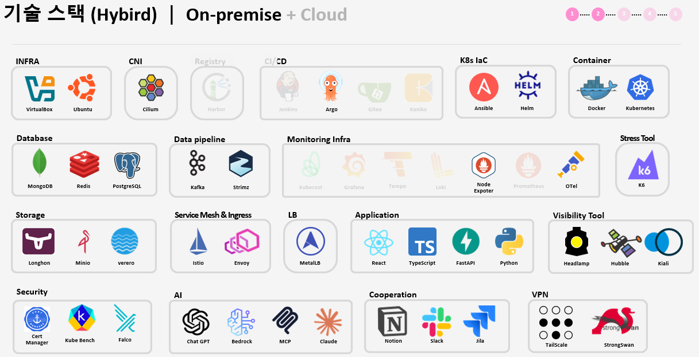
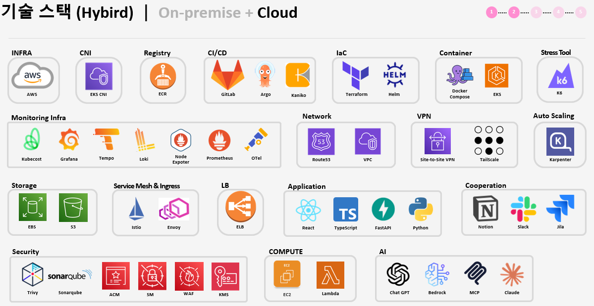
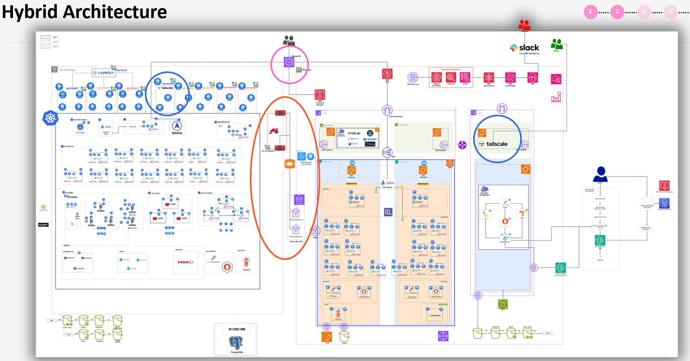
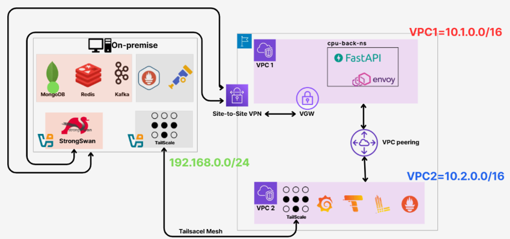
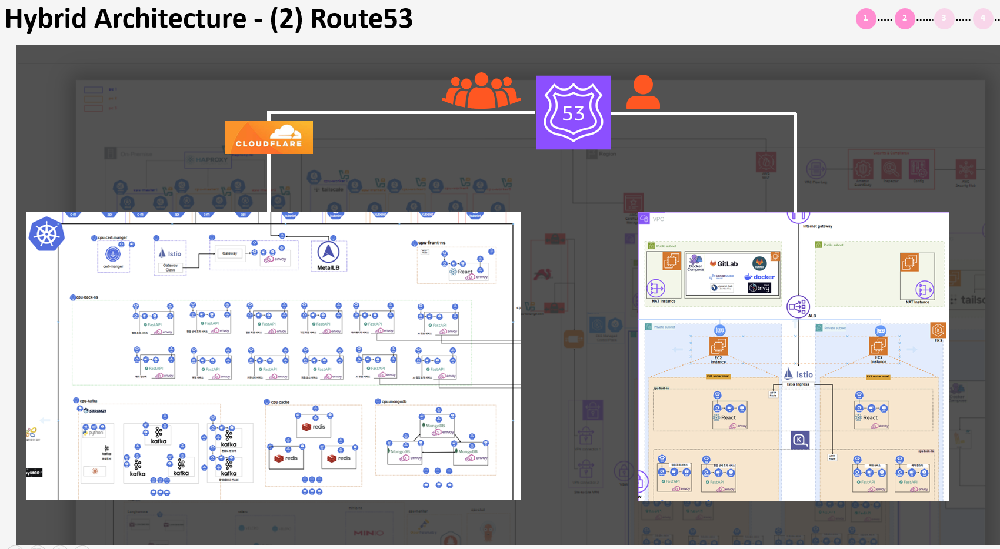
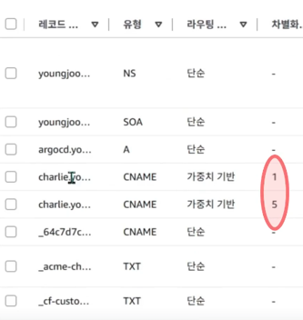
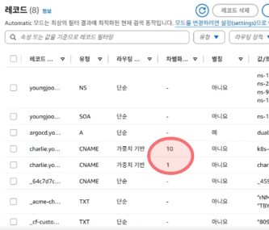
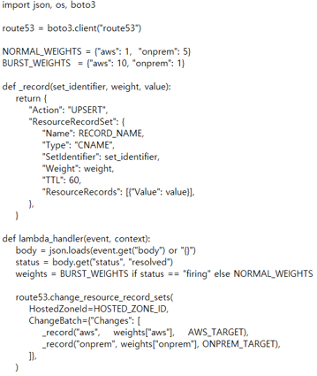
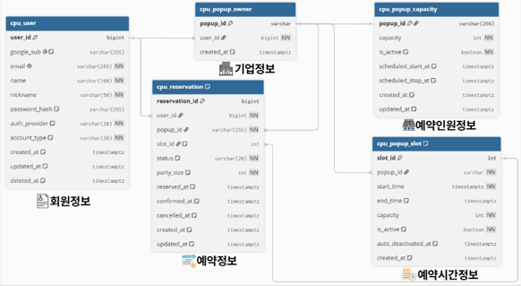
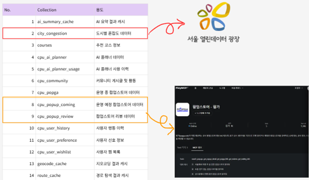

핵심 기술 스택 (Tech Stack)
담당 역할 (My Role)
- 하이브리드 인프라 설계 및 IaC: AWS 및 온프레미스 연동 구조 설계 및 Terraform 기반 자원 자동화
- 하이브리드 VPN 연결망 구축: strongSwan(IPsec) 기반 AWS Site-to-Site VPN 및 Tailscale 메시 VPN 이원화 네트워크 구축
- AWS 관측성(MELT) 인프라 구축: Prometheus, Loki, Tempo, OpenTelemetry 스택 구축
- Route53 기반 가중치 트래픽 자동 전환: Alertmanager + API Gateway + AWS Lambda 기반 동적 라우팅 파이프라인 설계 및 검증
- 커스텀 도메인 노출: Cloudflare Tunnel 및 Custom Hostname 적용으로 온프레미스-AWS 간 안전한 통신 노출
- 데이터 수집 및 데이터베이스 설계: PlayMCP/서울시 열린데이터 파이프라인 연동, MongoDB 및 PostgreSQL(RDB) 스키마 설계
- 마이그레이션 전략 수립: AWS 7R 프레임워크 기반 하이브리드 전환 전략 수립
1. 온프레미스 - AWS 마이그레이션 및 7R 프레임워크 전략
한정된 예산 내에서 전면 이전이 아닌, 온프레미스와 AWS를 상시 함께 활용하는 하이브리드 확장 전략을 선택했습니다. 평상시에는 온프레미스가 트래픽을 처리하고, 임계치 초과 시 AWS가 초과분을 분산 흡수합니다.
[온프레미스 적용 스택]

[AWS 적용 스택]

(1) Retain (유지)
리소스를 가장 많이 소비하는 DB 계층(MongoDB, Redis, Kafka)은 온프레미스에 유지하여 완전관리형 비용 부담 극복.
(2) Rehost (재배치)
온프레미스 부하를 줄이고 장애 시 관측성을 유지하도록 모니터링 인프라(MELT)를 AWS EC2로 전체 이전.
(3) Replatform (리플랫폼)
쿠버네티스 컨트롤플레인을 AWS EKS로, 로드밸런서를 ALB로 전환.
(4) Repurchase (재구매)
CI/CD를 Jenkins → GitLab, 레지스트리를 Harbor → ECR로 전환.
(5) Refactor (리팩토링)
하이브리드 연결점(VPN/Route53) 신설, Karpenter 오토스케일링 및 보안 도구 도입.
(6) Retire (폐기)
Grafana 대시보드 대신 이상징후 탐지용 자체 대시보드로 대체.
2. 하이브리드 인프라 연결점 (VPN & Route53)

AWS의 Edge-to-Edge 라우팅 제한 문제를 해결하기 위해 네트워크 용도에 따라 두 개의 VPN 경로로 이원화했습니다.

- DB 및 데이터 통로: AWS Site-to-Site VPN(IPsec)과 온프레미스 strongSwan 연동 (보안 및 데이터 안정성 확보)
- 모니터링 수집 통로: VPC 간 피어링 시 모니터링 트래픽 전달 한계를 극복하기 위해 비용 효율적인 Tailscale 메시 VPN 채택
- 대역 분리: AWS VPC1(10.1.0.0/16)과 VPC2(10.2.0.0/16) 대역을 완전 분리하여 트래픽 혼선 방지
단일 진입점으로 Route53 가중치 라우팅을 적용하여 부하 상황에 따라 트래픽 비율을 자동으로 제어하도록 구축했습니다.

평상시 가중치 (온프레미스 5 : AWS 1)

임계치 초과시 자동 전환 (온프레미스 1 : AWS 10)

Prometheus 요청률(rate) 지표 기반 Alertmanager 경보 발생 시 → API Gateway → Lambda 파이프라인이 즉시 가중치를 변경하도록 구현했습니다.

3. 데이터베이스 스키마 설계 및 파이프라인
회원정보, 기업정보, 팝업스토어 예약 가능 수량/슬롯 및 예약 상태 관리를 위한 관계형 데이터베이스 모델링입니다.

서울 열린데이터 광장의 도시 혼잡도 실시간 수집 및 PlayMCP 연동 팝업스토어/리뷰 수집 데이터를 적재하는 Document 모델링입니다.

4. CI/CD 파이프라인 및 브랜치 전략

단기 기능 브랜치를 통해 빠르게 지속적 통합(CI) 및 배포(CD) 속도를 보장하는 Trunk-Based 전략을 적용했습니다.

배운 점 및 트레이드오프 성찰 (Retrospective)
- 합리적 트레이드오프의 중요성: 제약된 예산 및 클라우드 제약(Edge-to-Edge 라우팅) 상황에서 기술적 완벽함만 고집하기보다, Tailscale 및 7R 프레임워크 도입 등 현실적이고 근거 있는 트레이드오프 선택이 핵심임을 배웠습니다.
- 실제 검증 기반의 엔지니어링: 부하 테스트를 진행하여 트래픽 한계점을 찾아내고, 이에 맞춰 Route53 가중치가 실시간 자동 동기화되는 것을 눈으로 검증하며 시스템 신뢰성을 확보했습니다.
- IaC(Infrastructure as Code) 도입의 가치: 대규모 하이브리드 환경을 여러 사람이 함께 구축할 때는 Terraform 코드화와 표준화된 운영 규칙이 필수적임을 깊이 실감했습니다.